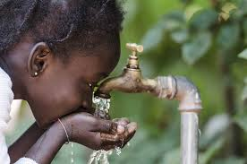
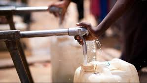
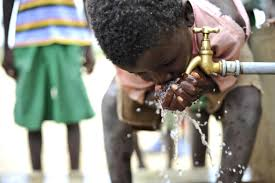

Maji safi kwa wote
ROVAKU WATER PURIFICATION COMPANYMaji safi kwa wote
ROVAKU WATER PURIFICATION COMPANYROVUKA is a community water project that aims at supplying water to it's people. We purify and supply to the people through the piping system or bottled. This project has been in working since 2017 and it has done so well. Our ai is to make sure that everyone gets the basic right at the most conveniet way.
  ROVAKUs is responsible for the Efficient and Economical Provision of Water Purification Services within the area under it's jurisdiction of Kibra and as a community project that aims at providing clean water for human consumption
To be a leading and self-sustaining Water purification Service Provider in Kibra and Kenya.
To effectively provide sustainable water purification services to our customers in a safe, reliable, adequate and affordable manner.
Values are an Integral part of any Organization's culture, which in turn creates a sense of identity, belonging, direction and purpose. In our Quest for Timely Provision of Quality Services, we shall be guided by the following Core Values as articulated in our Strategic Plan (2020-2025):